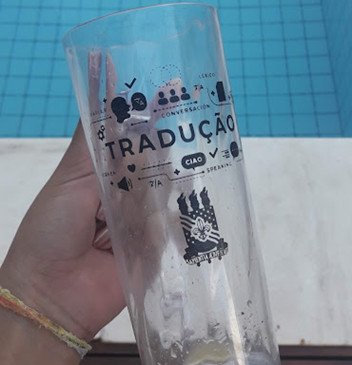

Victoria Cabral Undergraduate student

Bachelor of Arts
in Translation
in Translation

Universidade Federal
da Paraíba, Brazil
da Paraíba, Brazil
Blue Diamond is not an actual translation agency. This website is a final assignment for a Translation for Printed and Digital Media course in the Translation program at Universidade Federal da Paraíba (Northeast Brazil). Until November 24, 2021, there were no real agencies named Blue Diamond found in ProZ. If there is a translation agency going by that name, this website has no ties with it whatsoever. The people on the "Meet the Team" page are not real. Their pictures were taken from the free image banks credited below, except from famous Korean actors Ji Chang-wook, Son Ye-jin, and Wi Ha-joon. Their biographies are fictitious. No identification with actual people (living or deceased), places, buildings, and products is intended.
My name is Victoria Cabral and I am a student in the Translation program at Universidade Federal da Paraíba, northeast Brazil. My specializations are Subtitling and Localization. I also want to specialize in Marketing Translation. Some of my favorite translation topics are Culinary, Fashion, Tourism, and well-being.
In this final assignment, I chose to build a website from scratch to translate into Brazilian Portuguese. I codded myself and wrote every information in it. It took me a lot of research to write it all down, but I learned a lot in the process. When I decided to create a fake translation agency's website, I knew that my copy had to target potential customers. This is why I have detailed information on my homepage. I took the time to write about every specialization this agency covers and to add data. In my research, I looked up translation agencies' websites on Proz. I observed every element in those websites: specializations pages, meet the team pages, contact forms, and more. Since many of them had blogs, I thought adding a blog page would make the website more authentic - and more of a challenge for me. Plus, I wanted to share some of what I learned by participating in events and workshops on Translation.
I can't thank W3Schools enough for several of the elements I used in this website and for all the helpful teaching materials.
Text Blocks Over Image
Object position on CSS
Column Cards
Blog Layout
Moving Navigation Bar
Scroll Indicator
Collapse Navigation Bar
CSS z-index Property
Checkout Form
Contact Form
CSS Shadow
CSS Layout Properties
Footer Search Button
A big shout out to Unsplash, Freepik, and Brasil com S for most of the amazing pictures and illustrations I used in Blue Diamond's pages.
Homepage Header, Work With Us Header, and Localization illustration for the blog post
Ciara Collins,Gabriela Montoya, and Luiz Pedro Vasques' pictures
Blog Header, Blog Navbar Icon
Blog post's illustrations: Curriculum Vitae, Subtitling, Scam, Translation Tools
Ji Sung Ho , Vivian Ji, and Alan Kim's pictures
Homepage Map Illustration
Blue Diamond Illustration
Thank you so much to FontAwesome for the icons and to all the developers that create such amazing things in CSS and HTML.
"Work With Us" form by W3docs
"Meet The Team" Page by W3 Schools
Automatic Testimonials Slideshow by Matthew Croak
Footer by Fantacy Designs
Hover effects by Ian Lunn
Testimonial Cards Design by Simon Lurwer on Dribbble
"Our Services" cards by Eric Mahoney
Testimonials cards by Florin Pop
Polaroid Pictures by Wanderson S. C.
CSS "Popular Blog Post" Ribbon